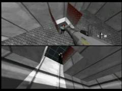
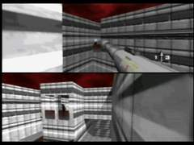
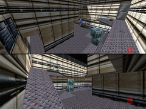
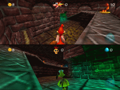
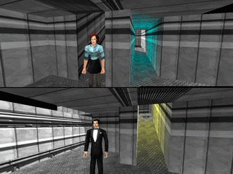
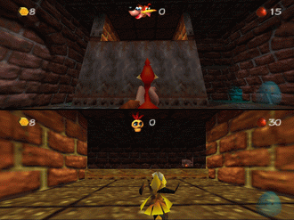
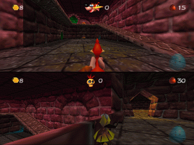

|
.
| Goldeneye
: Complex |
Taille
- Le plus
Grand des Niveaux. Et le Meilleur aussi je crois bien... Plein de couloirs,
d'endroits aérés, d'Escaliers. Rien à dire, ce
Niveau c'est une promenade ! Décor - Bons, avec des Eclairages Jaunes, Bleus et Rouges. Le Ciel Rouge ajoute beaucoup à l'Ambiance, tout comme les Grillages, et les Trous Noirs... Armes - Tout se vaut, à part peu-etre les Explosifs. Les Pistols sont à l'honneur, avec toutes les poursuites que l'on peut faire. Les Power Weapons sont aussi très bien ! Camping - Y a plusieurs endroits. - Le Petit Pigeonnier. C'est en Haut de l'Escalier, juste après le Poton en V. - Le Gros Pigeonnier. C'est juste en face ! - Les Fausses Grilles. Y en a 3, a vous de les découvrir. - La Cave. - Le Coin Rouge du Gilet. |
 |
 |
 |
Ce
Trou dans le Gros Pigeonnier est magique. Glissez ce que vous voulez
dedans et laissez mijoter (Roquettes, Grenades, Mines) |
L'Entrée
du Petit Pigeonnier est un vrai Traquenard. Je crois que la Photo parle
d'elle-meme. Celui en bas va passer un sale quart d'heure. |
Pour
peu que l'on ait des Roquettes ou Grenades, les 2 Pigeonniers fonctionnent
dans les 2 sens. Boum ! Baston entre les Balcons ! |
 |
 |
 |
Le
Joueur du bas va exploser ! |
La
Salle aux 2 Ponts est mortelle. |
La
Sortie de la Cave est dangereuse. |
 |
 |
 |
Je
ne vous recommande pas d'explosifs dans ce genre d'endroits ! |
Baston
dans la Salle aux 2 Escaliers via le Balcon du Gros Pigeonnier.
|
L'entrée
vers le Gilet (Jaune) ou le gros Pigeonnier (Bleu) est un Endroit ou
ca chauffe réulièremment. |
|
Le
Complexe est également Présent dans Perfect Dark et
Banjo Tooie ! |
Le Complex dans Banjo Tooie ! C'est le Niveau Clinker's Cavern ! Bon, pour Perfect Dark, c'était évident, mais pour Banjo Tooie c'est une Belle Surprise ! Le Niveau est un Poil différent dans Banjo Tooie, mais il c'est un Clone très réussi tout de même ! Ci-dessous, 3 Photos tirées d'un même Endroit du Complex ! |
 |
 |
 |
| Comparatif
Goldeneye / Banjo Tooie |
 |
 |
 |
 |
 |
 |
 |
 |